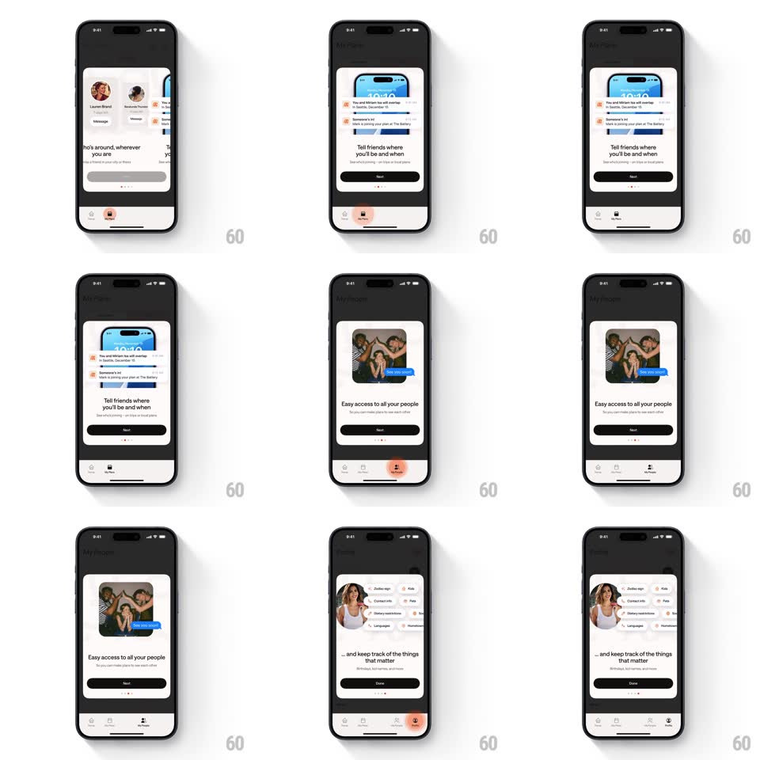

Media
Frame-by-frame

Rebuild this interaction 1:1: Mozi's tab-driven onboarding - the bottom tab bar itself is the pager, and a pulsing glow on the next tab guides the user to tap it, sliding each feature sheet in horizontally.

Rebuild this interaction 1:1: Mozi's tab-driven onboarding - the bottom tab bar itself is the pager, and a pulsing glow on the next tab guides the user to tap it, sliding each feature sheet in horizontally.
## Integration
Integration: stack-agnostic spec - springs given as stiffness/damping, timed motions as duration + curve; map every value to your framework and animation library of choice.
## Scene
Dark background with a rounded white sheet per step: a feature screenshot and headline ("Know who's around, wherever you are", "Tell friends where you'll be and when", "Easy access to all your people", "...and keep track of the things that matter") with a Next or Done button, page dots, and the app's bottom tab bar (Home, Plans, People, Profile icons) below.
## Motion spec
Pattern: tab-guided carousel with pulsing indicator, ~450ms per step.
- Guidance: the next tab's icon carries a peach glow that pulses (scale 1 -> 1.15 halo, opacity 60 -> 20%, 1.2s loop) until it is tapped.
- Transition: tapping the glowing tab slides the current sheet out left and the next in from the right (350ms, ease-out); the headline crossfades with a 12px rise (250ms).
- The active tab icon fills with the peach tint (150ms); the glow moves to the following tab.
- Final step: Done replaces Next (crossfade 200ms) and the glow stops.
## Calibration
- The glow is a halo behind the tab icon, not a badge on it.
- Swiping the sheet also advances and moves the glow - tab and pager stay in sync.
## Reduced motion
Sheets crossfade (300ms); the glow is a static tint.
## Don't miss
- The bottom tab bar is real and tappable throughout onboarding - it is not a mock.
- The pulse keeps looping until the user follows it; it never times out.